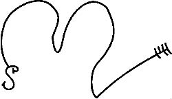

Bu onun İşareti, onu daha iyi tanımanı sağlar:

Ve ayrıca şunu da bil ki, bu Kötülerin lejyonları sayısızdır ve belli zamanlarda belli kişiler dışındakilere görülemeseler bile her yöne ve her yere uzanır. Ve bu zamanlar daha önceden söylenen zamanlardır ve kişiler bilinmemektedir, çünkü kim XASTUR’u tanıyabilir ki?
Ama Ölüler her zaman çağrılabilir ve pek çok kez uyandırılmaya gönüllüdürler, ancak bazıları inatçıdır ve Oldukları yerde kalmayı arzu ederler ve ISHTAR gibi hem bu Yerde hem de bir Başkasında gücü olan Rahibin çabaları dışında kalkmaz. Ve Ölüler Dört Yönde ve Dört Boşlukta çağrılmalıdır, Rahip nerede olduklarını bilmeden her yerden onları çağırarak özel bir itina göstermelidir, çünkü Ruh o sırada uçuyor olabilir.
Ve Ölü bir Tanrı da aynı zamanda çağrılabilir ve bunun formülleri aşağıdaki gibidir. Berrak ve gür bir sesle, tek bir kelime bile değiştirilmeden söylenmelidir, aksi takdirde Tanrının Ruhu seni yiyebilir, çünkü Onların oldukları yerde ne Besin ne de Su vardır.
Ve onun gizli, pencereleri olmayan veya yalnızca bir tek penceresi olan, o da Kuzey Duvarında bulunan bir yerde çağrılması ve tek ışığın sunak üzerine konulan bir lambadan gelmesi gerekir ve ne lambanın ne de sunağın yeni olması gerekmez, çünkü bu, Çağın ve Kadimlerin Ayinidir ve onlar yenilikleri umursamazlar.
Ve sunak toprak üzerine konulmuş geniş bir kaya olmalıdır ve Tanrının doğasına göre makbul bir kurbanlık verilebilir. Çağrı zamanında, ABSU’nun suları kızışır ve KUTULU hareketlenir, ama Onun vakti gelene kadar kalkmayacaktır.
Ve bu Ölü Tanrının Duasıdır:
NAMMTAR gözlerimi açsın ki görebileyim . . . . . . . . .
NAMMTAR kulaklarımı açsın ki duyabileyim . . . . . . . . .
NAMMTAR burnumu açsın ki Yaklaştığını duyayım.
NAMMTAR ağzımı açsın ki sesim Dünyanın uzak uçlarından bile duyulsun.
NAMMTAR sağ elimi güçlendirsin ki güçlü olayım, Ölüleri….kuvvetim altında her daim kuvvetim altında tutabileyim.
Sana dua ediyorum, Tanrıların Atası!
Seni çağırıyorum, Karanlığın Yaratığı, Karanlığın Kelimeleriyle!
Seni çağırıyorum, Nefretin Yaratığı, Nefretin Kelimeleriyle!
Seni çağırıyorum, Issızlıkların Yaratığı, Issızlıkların Ayinleriyle!
Seni çağırıyorum, Acının Yaratığı, Acının Kelimeleriyle!
Seni çağırıyor ve davet ediyorum, Karanlığın içindeki Evinden!
Seni çağırıyorum Dünyanın bağırsaklarındaki dinlenme-yerinden!
Gözlerini çağırıyorum Hayat Ateşiyle dolu Asamın Parlaklığına bakmaları için!
Sana dua ediyorum, Ey Tanrıların Atası!
Seni çağırıyorum, Karanlığın Yaratığı, Karanlığın Kelimeleriyle!
Seni çağırıyorum, Nefretin Yaratığı, Nefretin Kelimeleriyle!
Seni çağırıyorum, Issızlıkların Yaratığı, Issızlıkların Ayinleriyle!
Seni çağırıyorum, Acının Yaratığı, Acının Kelimeleriyle!
Dünyanın Gökyüzünü tutan Dört Kare Sütunundan,
Onlar bana zarar vermek isteyenlere karşı sağlam dursun!
Seni davet ediyorum Dünyanın bağırsaklarındaki dinlenme-yerinden!
Seni çağırıyorum ve Kulaklarını, Kelimeyi duyman için kimsenin söylemediği Babandan başka, Çağı bilenlerin Tümünden Daha Yaşlı olan
Bağlayan ve Kumanda eden Kelime benim Kelimemdir!
IA! IA! IA! NNGI BANNA BARRA IA!
IARRUGISHGARRAGNARAB!
Sana yakarıyorum, Ey Tanrıların Atası!
Seni çağırıyorum, Karanlığın Yaratığı, Karanlığın Kelimeleriyle!
Seni çağırıyorum, Nefretin Yaratığı, Nefretin Kelimeleriyle!
Seni çağırıyorum, Issızlıkların Yaratığı, Issızlıkların Ayinleriyle!
Seni çağırıyorum, Acının Yaratığı, Acının Kelimeleriyle!
Seni çağırıyorum ve Seni davet ediyorum, Karanlıktaki Evinden!
Seni davet ediyorum Dünyanın Bağırsaklarındaki dinlenme-yerinden!
ÖLÜLER KALKSIN!
ÖLÜLER KALKSIN VE KOKUYU DUYSUNLAR!
Ve bu yalnızca bir kez ezberden okunmalıdır ve eğer Tanrı görünmezse, ısrar etme, ama sessizce Ayini tamamla, çünkü bu, onun başka herhangi bir yere çağrıldığını veya rahatsız etmemenin daha iyi olacağı başka bir İşle meşgul olduğunu gösterir.
Ve ölülerin yemesi için ekmek hazırladığın zaman, üzerlerine bal koymayı unutma, çünkü bu, geceleri köpek ulumaları ve çocuk inlemeleri arasında caddeler boyunca gezinen, Kimsenin Tapmadığı Tanrıça için memnun edicidir, çünkü Onun zamanında Ona büyük bir Tapınak yapılmış ve Şehri, dışarıdaki Düşmanlardan korusun diye ona çocuklar kurban edilmişti. Ve böylece öldürülen çocukların Sayısı çok fazla ve bilinmezdi. Ve O da Şehri korudu, ama onlar çocuklarını kurban etmeyi bıraktıktan kısa bir süre sonra şehir alındı. İnsanlar yeniden kurbanlık sunmaya başladıklarında, saldırı sırasında, Tanrıça arkasını döndü ve tapınağından uzaklaştı ve şehir yok oldu. Tanrıçanın İsmi artık bilinmiyor. Ve O çocukları huzursuz eder ve ağlatır onları, balın kutsal ekmeğin üzerine konma sebebi budur, çünkü bu yazılmıştır:
Ölüler Kültünün Ekmeğini Yerinde yedim
Hazırlanan Celsede
Ölüler Kültünün Suyunu Yerinde içtim
Kraliçeyim ben, Şehirlere yabancı olan
Batık bir gemide Alçak Ülkeden gelen
Benim.
BEN BAKİRE TANRIÇAYIM
ŞEHRİME HISIM OLAN
CADDELERİMDE BİR YABANCI.
MUSIGAMENNA URUMA BUR ME YENSULAMU
GIRME EN!
Ey, Ruh, kim anlar seni? Kim kavrar Seni?Şimdi, Kadimlere söylenecek, putlar yapıp Ayın ve diğer Varlıkların ışığında yakan Gecenin Sihirbazları tarafından iyi bilinen İki Büyülü Söz yazılı burada. Ve onlar yasak otları ve şifalı otları yakar ve muazzam Kötülükleri uyandırırlar ve onların Kelimelerinin asla yazılmadığı söylenir. Ama yazılmıştır. Ve onlar Ruhu talan eden, Boşluğun ve Karanlığın Dualarıdır.
Kadimlere İlahi
Aşağıda yatıyorlar, Ulu İhtiyarlar.
Sürgüler sürüldü ve kapı mandalları yerleşti.
Kalabalıklar sakin ve insanlar sakin.
Ülkenin Yaşlı Tanrıları
Ülkenin Yaşlı Tanrıçaları
SHAMMASH
SIN
ADAD
ISHTAR
Göklerinde uykuya çekildi.
Hükümler telaffuz etmiyorlar.
Kararlar vermiyorlar.
Gece örtüldü Peçeyle.
Tapınak ve En Kutsal Yerler sessiz ve karanlık.
Doğrunun Yargıcı
Babasızların Babası
SHAMMASH
Odasına çekildi.
Ey Kadimler!
Gecenin Tanrıları!
AZABUA!
IAK SAKKAK!
KUTULU!
NINNGHIZHIDDA!
Ey Parlak olan, GIBIL!
Ey Savaşçı, IRRA!
Yedi Gücün Yedi Yıldızı!
Her Daim Parlayan Kuzey Yıldızı!
SIRIUS!
DRACONİS!
CAPRICORNUS!
Başında dur ve kabul et
Bu kurbanı sana sunduğum
Kabul edilebilsin bu
Kadim Tanrılarca!
IA MASHMASHTI! KAKAMMU SELAH!
Güçlerin Yakarısı
Yerin Ruhu, Hatırla!
Denizlerin Ruhu, Hatırla!
NAR MARRATUK’un En Gizli Ruhları Adına
Denizlerin altındaki deniz
Ve KUTULU’nun denizi
Ölü gibi uyuyan Yılan
Ötesinde Kral mezarlarının
Ötesinde lahtin içinde yatan INANNA’nın
Tanrıların Kızının
Girmeye hak kazandı Habis Uykularına onların
KUTHULETH’in dişi-hayaletlerinin
SHURRUPAK’da, seni çağırıyorum imdadıma!
UR’da, seni çağırıyorum imdadıma!
NIPPURR’da, seni çağırıyorum imdadıma!
ERIDU’da, seni çağırıyorum imdadıma!
KULLAH’da, seni çağırıyorum imdadıma!
LAAGASH’da, seni çağırıyorum imdadıma!
Ayaklanın, Ey gelen güçler tüm denizlerin aşağısındaki denizden
Bütün mezarların ötesindeki mezardan
TIL’ın Ülkesinden
SHIN’e
NEBO’ya
ISHTAR’a
SHAMMASH’a
NERGAL’a
MARDUK’a
ADAR’a
Hayat Suyunun Evi
Solgun ENNKIDU
Duy beni!
Denizlerin Ruhu, Hatırla!
Mezarların Ruhu, Hatırla!
Ve bu büyülü sözlerle ve diğerleriyle birlikte sihirbazlar ve dişi-sihirbazlar insan yaşamına zarar veren pek çok şeyi çağırırlar. Ve onlar balmumundan ve undan ve baldan ve bütün madenlerden putlar şekillendirerek ve onları yakarak veya yok ederek uygarlıkları efsunlarlar. Ve vebalara sebep olurlar, çünkü PAZUZU’yu çağırırlar. Ve deliliğe sebep olurlar, çünkü AZAGTHOTH’u çağırırlar. Ve bu Ruhlar Rüzgarın üzerinde gelirler ve bazıları Toprakta sürünerek. Yetenekli Rahip tarafından yazılan ve ezberden söylenen defetmeler dışında ne bir yağ, ne bir toz bir insanı bu İnquity den koruyamaz. Ve onlar Ayın altında çalışırlar, Güneşin ve Kaldeliler’in haberdar olduklarından daha eski gezegenlerin değil. Ve iplere, düğümler atarlar ve her biri bir sihirdir. Ve eğer bu düğümler bulunursa, çözülebilir ve düğümler, ipler yakılabilir ve sihir bozulabilir, tıpkı yazıldığı gibi:
VE ONLARIN SİHİRLERİ ERİMİŞ BALMUMU OLACAK DAHA FAZLASI DEĞİL.
Ve bir insan feryat edebilir, ben ve benim neslim ne yaptık da böylesi bir kötülük geldi başıma? Ve hiçbir anlamı yoktur bunun, yalnızca insan doğmakla bile üzüntülü olunur, çünkü insan Kadimlerin Kanındandır, ama Yaşlı Tanrılar onun burnundan üflemişlerdir. Ve bedeni Kadimlerin dediğini yapar, ama aklı Yaşlı Tanrılara dönüktür ve bu her zaman için, son insan nesline kadar mücadele edilecek bir Savaştır, çünkü Dünya doğal değildir. Yüce KUTULU ayaklandığında ve Yıldızları selamladığında, Savaş bitecek ve Dünya bir olacaktır...
Bu Menfurluklar Aktinin ve bu Metnin Sonudur.